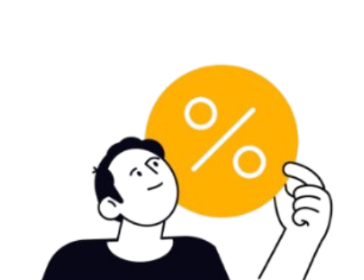

Brady ditagih bayar kontrakan. Dia baru jadi PNS dan merantau, tapi sudah 3 bulan nggak bayar karena uangnya habis buat judi online. Sekarang, dia terpaksa pinjam uang dari orang lain.
"Ya ampun. Duitku habis total, utang numpuk, gaji belum cari. Dompet kosong..."

Ya... Setiap hari dia cuma judi. Uang makan pun dipakai buat itu. Jangan tiru Brady, ya.